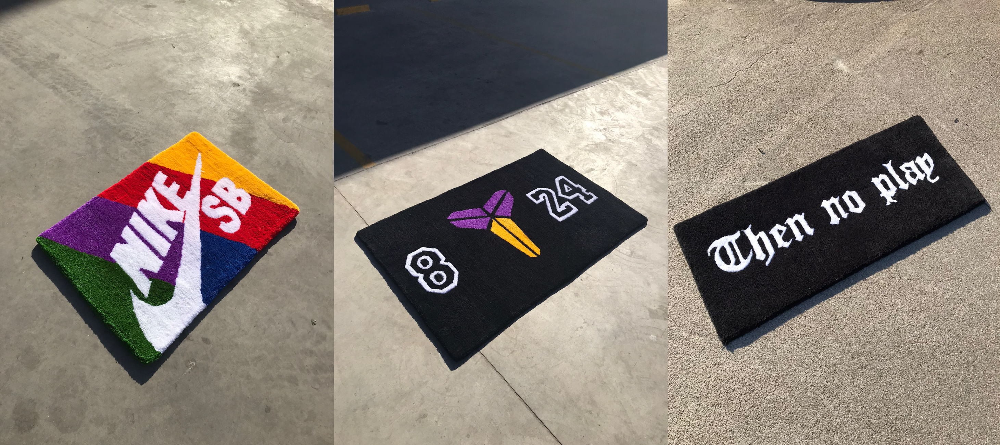

Bienvenidos a Culture Rugs
El tufting es la realización de alfombras con un método especial en el cual se utiliza un instrumento denominado pistola, que permite hacer pasar los hilos por una tela especial, montada sobre un marcho y evitando el hacer nudos. Así, la técnica es algo menos laboriosa, más rápida y, en cierto modo, más asequible para el aficionado. Como otras técnicas de creación de alfombras es preciso realizar o disponer de un diseño previo.